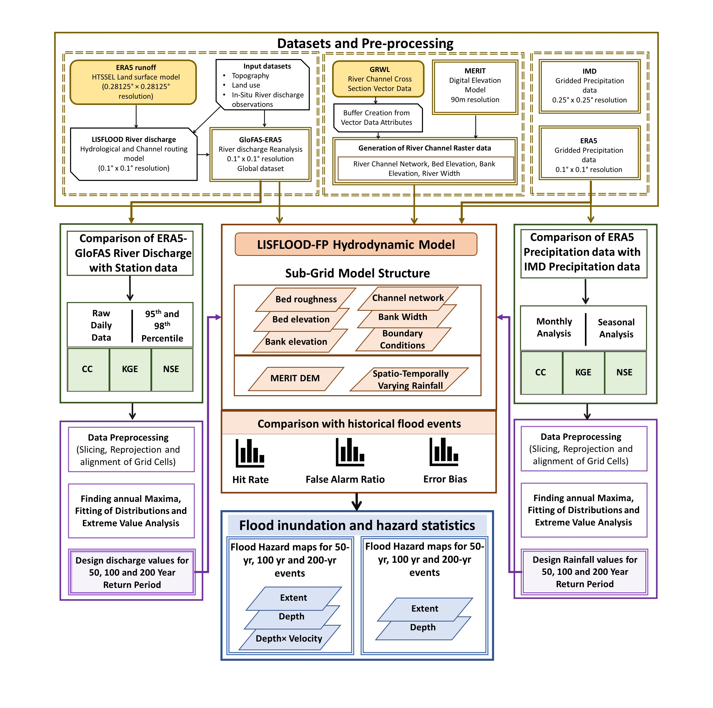
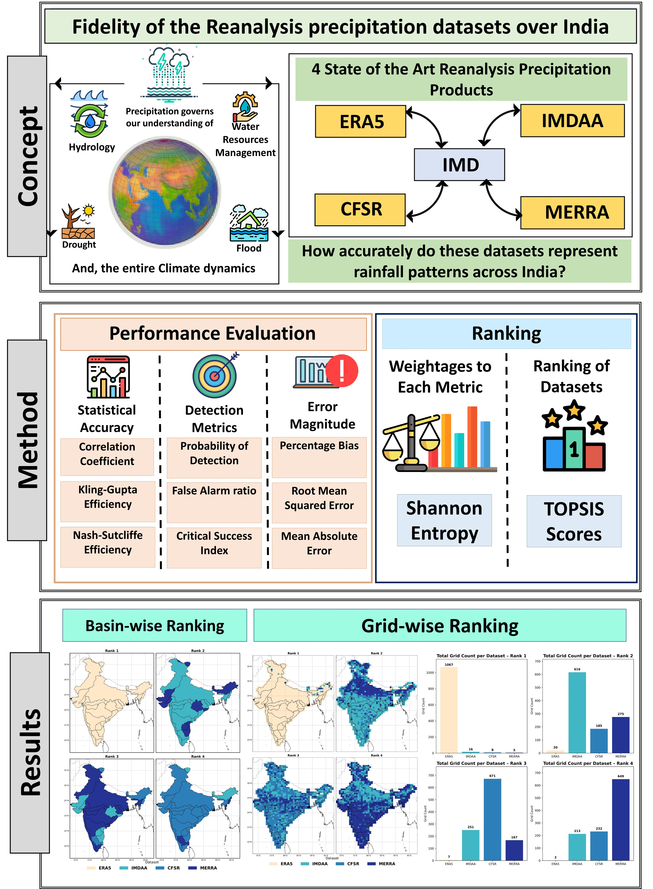

I am..
a Prime Minister's Research Fellow (PMRF) and PhD Research Scholar in the Department of Water Resources Development and Management at the Indian Institute of Technology Roorkee, working under the supervision of Prof. Mohit Prakash Mohanty. My doctoral research develops a socio-hydrological framework to capture flood-risk dynamics across India, combining nationwide hydrodynamic flood-hazard modelling and district-level vulnerability assessment at the basin scale with a compound-flood risk index for 100 Indian cities at the urban scale. I work with reanalysis hydro-meteorological datasets, hydrodynamic simulation (LISFLOOD-FP), extreme-value statistics, copula modelling, and multi-criteria decision-making to translate flood hazard into risk information that is usable for planning and disaster-risk management.
Find me on LinkedIn and Google Scholar. An ORCID link and a CV download will be added here soon — in the meantime, please use the Contact page for direct correspondence.
Featured Research

Performance of ERA5 Products in Capturing Pluvial and Fluvial Inundation
A statistical-cum-hydrodynamic framework evaluating ERA5 rainfall and GloFAS discharge for flood-hazard mapping in resource-constrained watersheds. Water Resources Management (2025).

Multi-scale Assessment and Entropy-MCDM Framework for Reanalysis Precipitation Datasets
Ranks ERA5, IMDAA, MERRA-2 and CFSR/CFSv2 against IMD observations across 25 Indian basins using a Shannon Entropy-TOPSIS decision framework. International Journal of Applied Earth Observation and Geoinformation (2025).